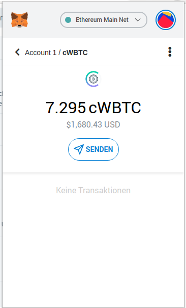

DeFi with and without TokenScript
The example of a DeFi app illustrates how TokenScript can improve your token and smart contract.
Assume you have a DeFi app which allows user to lend and borrow digital token and distributes its own token via yield farming to its users. This is a common model in DeFi.
User experience without TokenScript
The user needs to visit a website, usually called a dApp. Despite the app being a smart contract on the Ethereum blockchain, users have to access it by a centralized website. There they connect their wallet to the website, which harms privacy.
To lend their token, they first have to make it available for the DeFi smart contract, for example by exchanging it in some special version of the token. To do so, the website forwards an unsigned transaction to the user's wallet to sign. After that the user can lend money with the same procedure: He asks the website, and the website crafts an unsigned transaction.
To know about the state of his DeFi stake, the user usually has to use the website again. His wallet doesn't understand the smart contract. It doesn't know that the user converted his token into DeFi token, and it doesn't know that he lent his token. Therefore, it doesn't know how much yield he earned and if his lending farmed new token.
For example, if you have Compound's cWBTC token in MetaMask, it just shows this:

Of course the wallet does also not know how to craft the transactions for this DeFi app. So the user needs to visit the website again to terminate the lending, to gather his yield and to get his farmed token.
You can improve the capabilities of your wallet. You can import the address of the smart contracts, which might allow your wallet to see the token. The wallet developers can also hardcode some information about the smart contract, so that the wallet knows that the user lended money. But this is very cumbersome, incomplete and doesn't scale at all.
User experience with TokenScript
If the DeFi app introduced TokenScript, things would look drastically different.
To start, the user needs to visit the website, too. He also needs the website to provide a transaction to exchange the token he wants to lend to customized DeFi token. But then the user experience drastically changes.
When his wallet has the DeFi token, it start to download the TokenScript. After having done so, the wallet suddenly understands the smart contract. It provides information about the token, so that the user can learn what it is. It also provides an overview about how much yield you get when lending it, and displays a button to lend and, when already lended, how to terminate it.
AlphaWallet has a rudimentary TokenScript for Compound. This allows to withdraw cWBTC token directly from the wallet, which is able to display the interest rate:

Since the wallet does understand the smart contract, it can find out how much yield you earned, and if you like, it can use an exchange API to translate your earnings in your local currency. Also, the wallet can know how much DeFi token you farmed, and provide a button to pay out the token.
In your wallet's history you see every single DeFi operation. The history knows well what you did - it knows which smart contract you used, which token you lended and for which yield rate.
TokenScript enables your wallet to do everything you formerly needed a website for. It also allows other websites to easily integrate your token into their service without the need to integrate it again from scratch.
ode